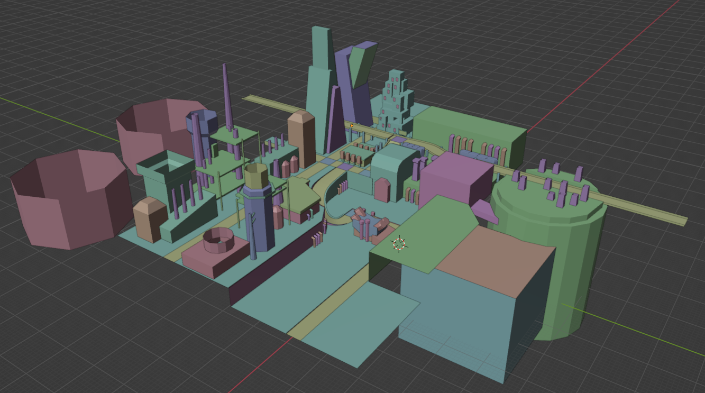
J'ai passé la première semaine à modéliser l'environnement de base.
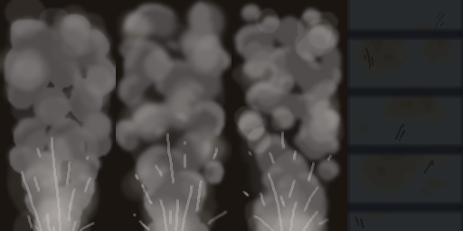
Avec Aseprite, j'ai créé des textures qui seront animées avec les outils d'intégration. Je peux créer une animation de type PAT pour faire changer le materiel de "steam1" à steam2, 3, en boucle.
L'animation de convoyeur (texture grise) a été faite avec une animation de type SRT, qui déplace les UVs sur la texture, en boucle.
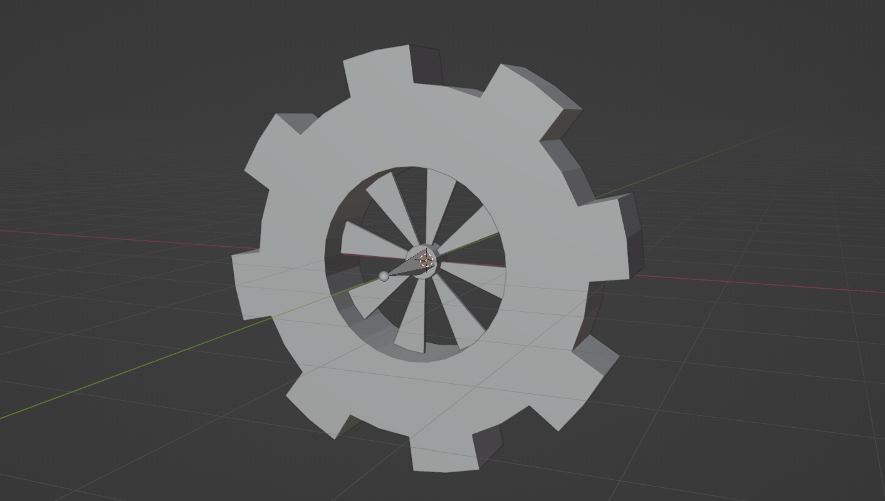
Avec les fenêtres de "dope sheet", "graph editor" et "nonlinear animation", j'ai pu animer les "bones" d'un objet et le bake dans le modèle directement. J'ai fait une roue d'engrenage et un pillier qui tombe, qui devient une rampe plus tard.
Le jeu interprète ensuite ça comme un CHR animation (character animation.)
C'était le gros de mon apprentissage.
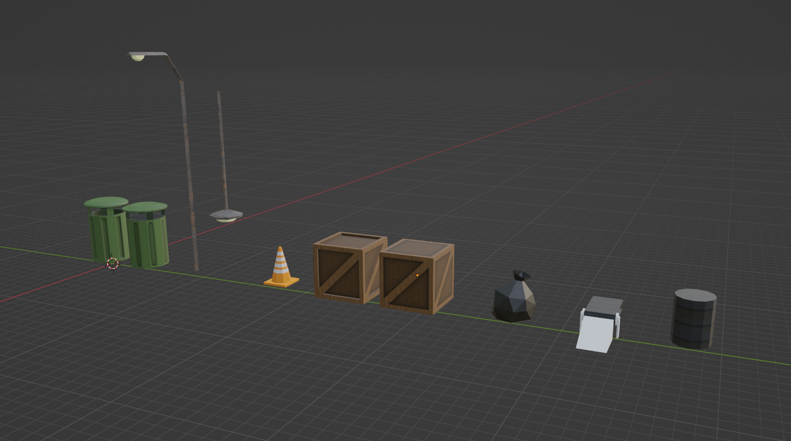
J'ai créé des objets "prefabs" que je pouvais ensuite coller un peu partout sur la carte
Certains objets ont une version high-poly et une version low-poly. La version high-poly a été utile pour créer des textures de haute qualité sur Substance 3D Painter, que je pouvais ensuite coller sur un modèle mieux adapté aux limitations de la console et du jeu.
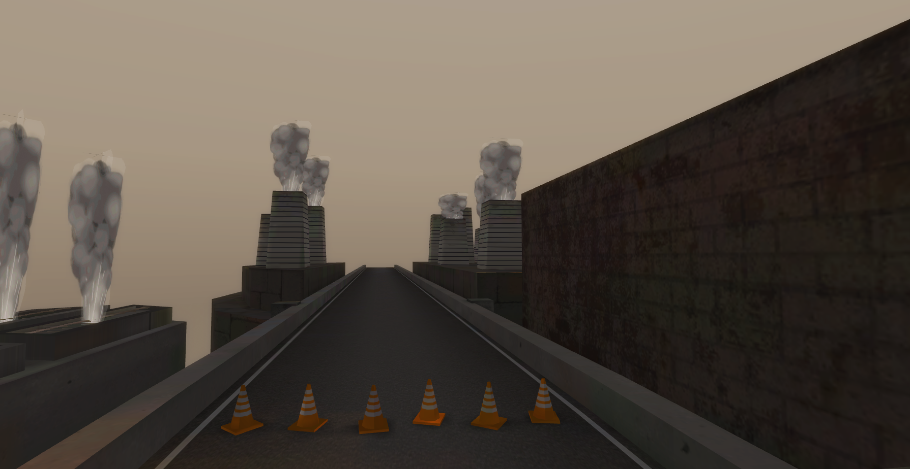
Avec BrawlCrate, outil d'intégration, j'ai créé un array de couleurs qui sont appliqués dans le modèle de ciel. C'est dans les teintes de brun pour montrer que l'endroit est pollué.
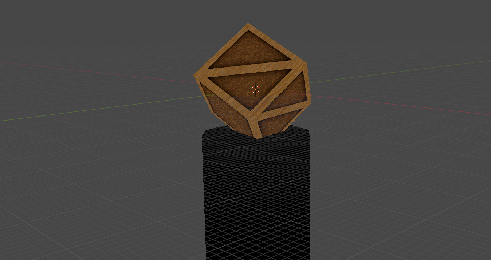
Mauvaise nouvelle: le jeu limite énormément la taille d'un fichier de course. Tout autre animation ou objet complexe que je voulais créer était trop gros pour le jeu...
J'ai dû m'adapter, le seul autre objet que j'ai réussi à faire était une boite avec une rotation fixe et courte.
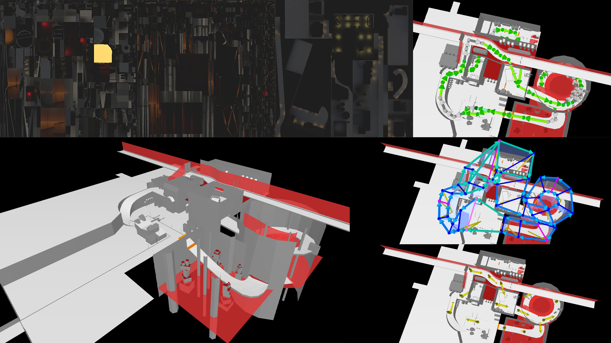
Pour intégrer le modèle dans le jeu, j'ai dû bake les lumières de Blender dans des textures qui sont mélangées avec les textures normales et faire un fichier pour les collisions.
J'ai aussi dû faire un fichier .KMP, où j'ai créé des routes pour les objets et les joueurs ordinateurs, les "checkpoints" qui permettent de compter ton nombre de tours et les points de respawn quand tu tombes dans le vide. C'est aussi avec ce fichier que j'ai placé mes objets externes comme la roue d'engrenage.
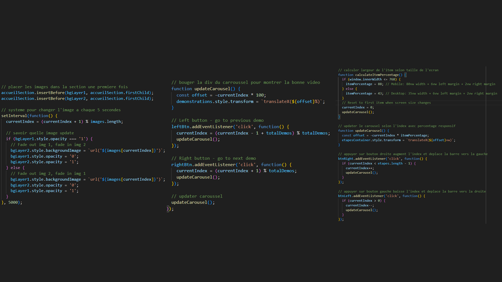
Pour présenter ce projet, j'ai créé cette magnifique page web, contenant des caroussels avec JavaScript afin de prouver que je suis le meilleur programmeur au monde.
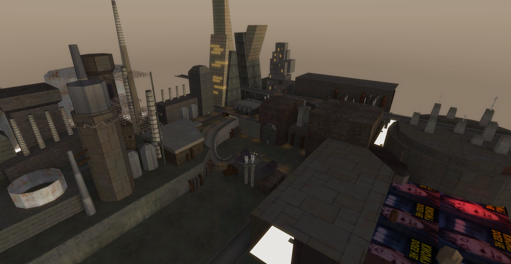
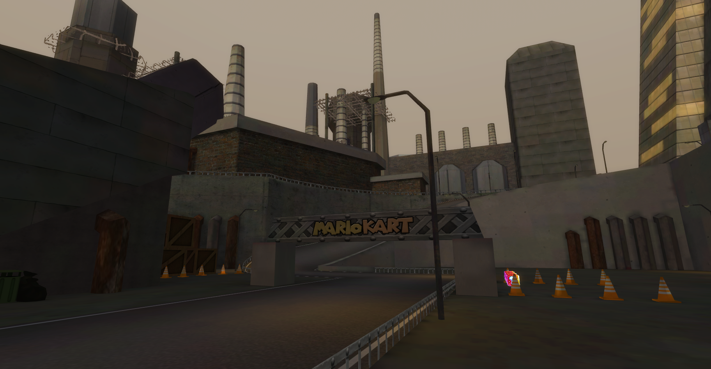
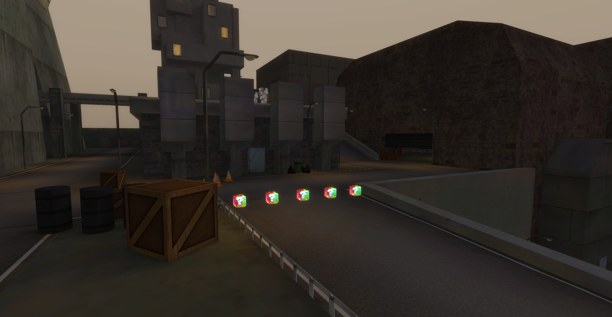
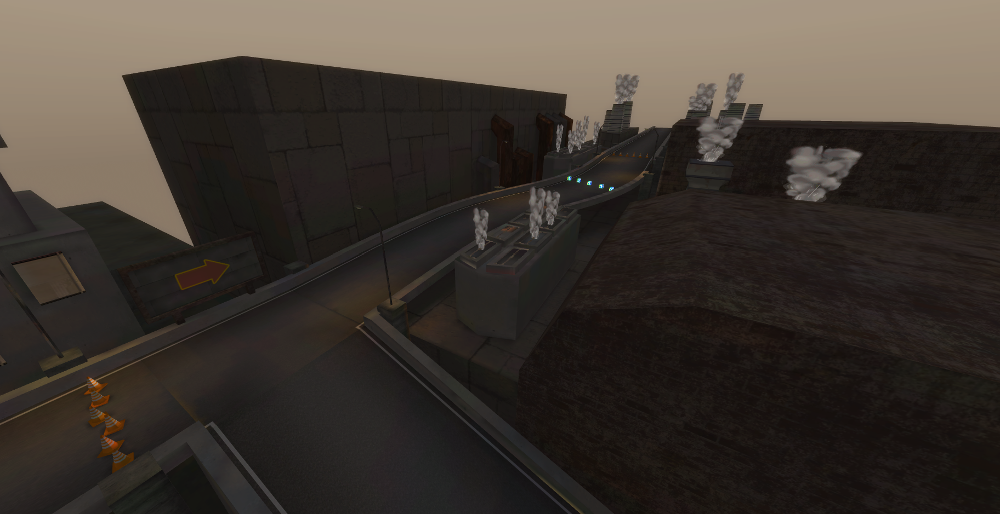
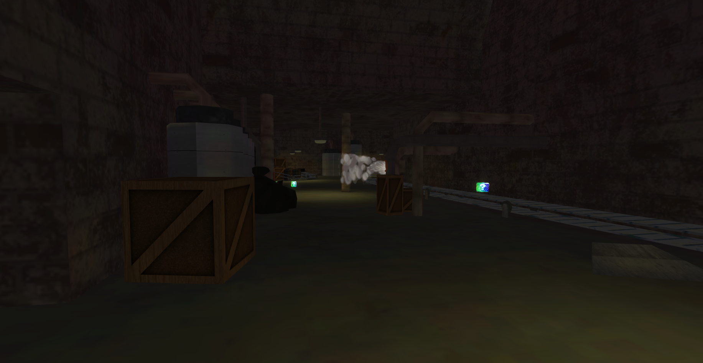
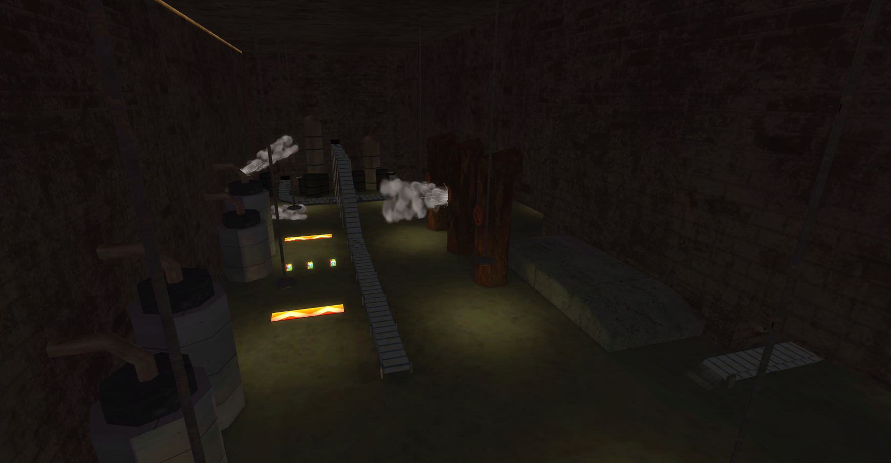
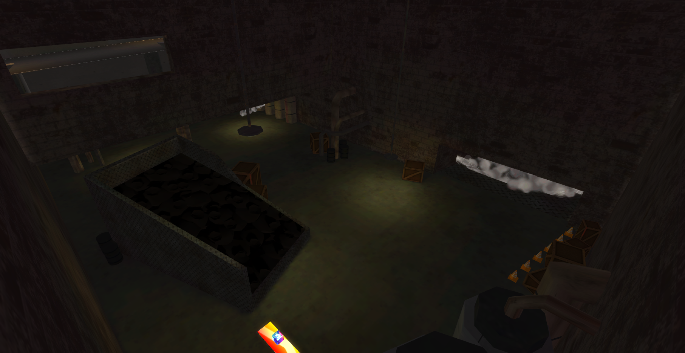
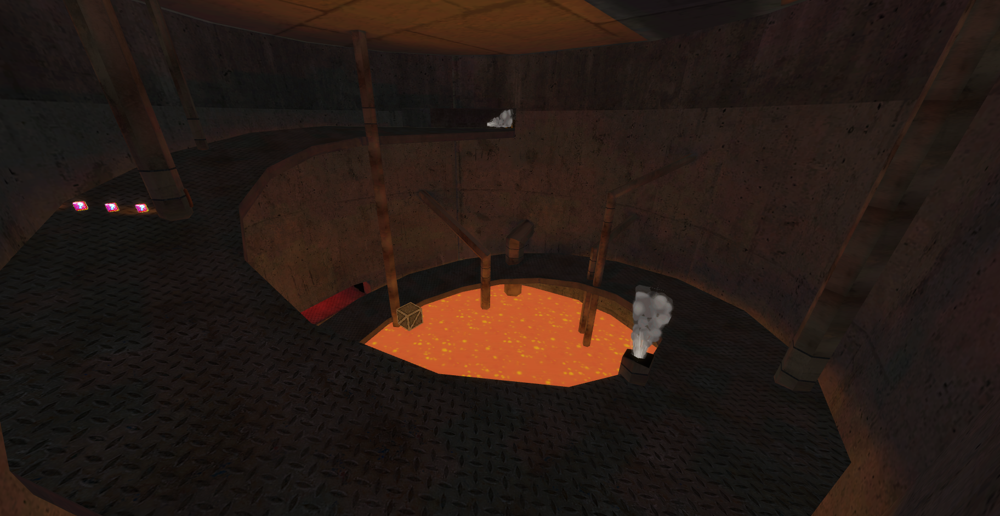
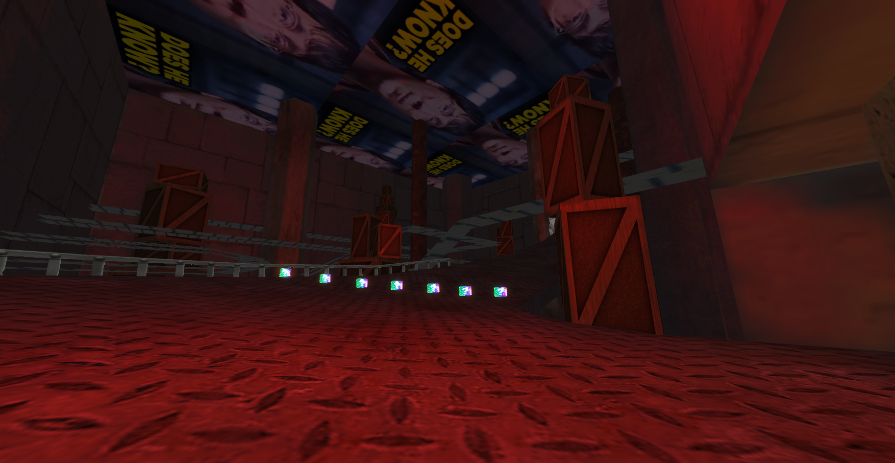
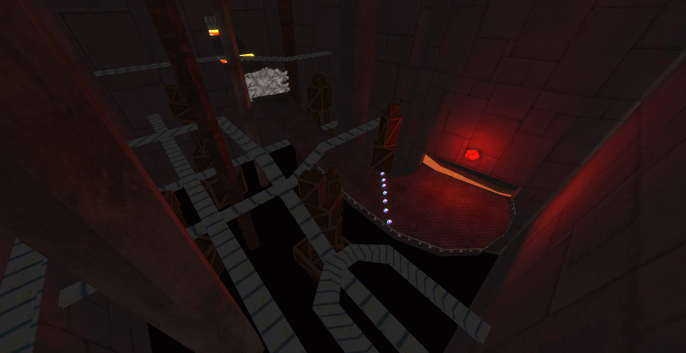
J'ai réussis à apprendre comment animer avec Blender, donc ce projet est un succès!
Par contre, ce projet contient très peu d'animations à cause des limitations du jeu. Si j'avais à refaire un projet afin d'apprendre l'animation dans Blender, je ferais autre chose entièrement qui me donnerait plus de liberté pour créer des animations. Peut être une courte animation de personnage? Un projet de posing? Je ne sais pas, honnêtement.